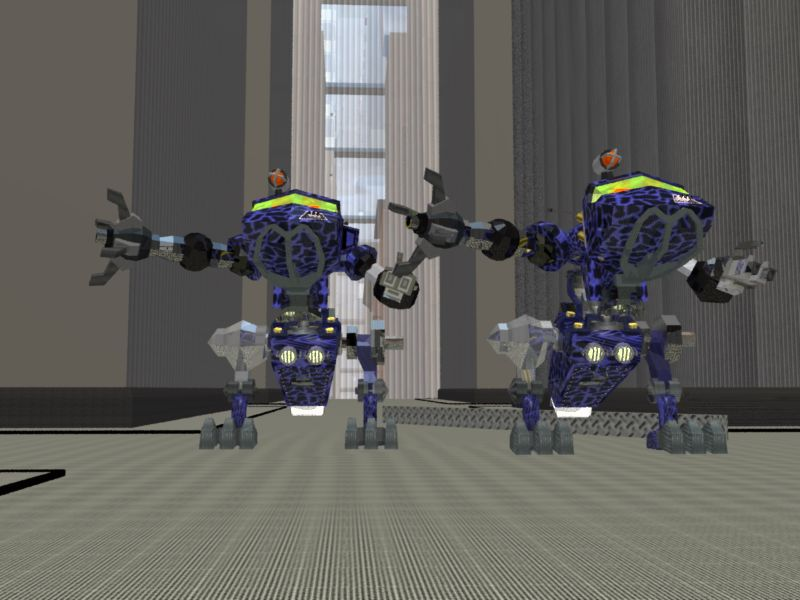
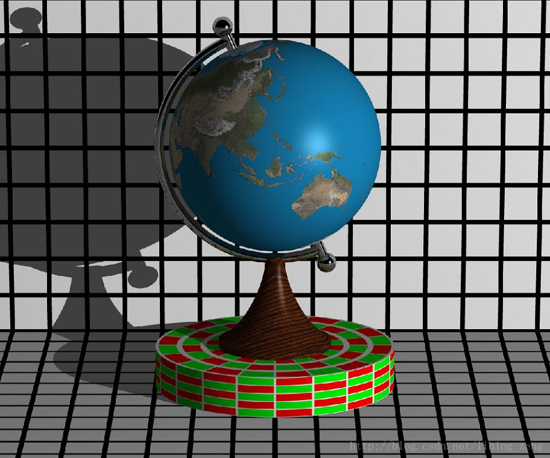
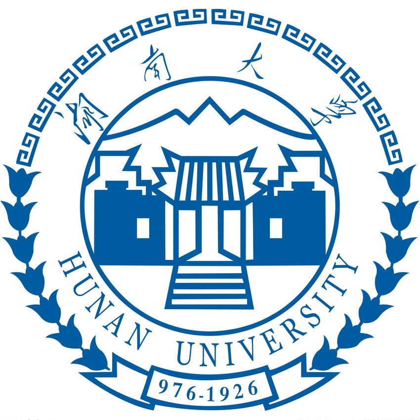

Howdy!
He is a first-year Ph.D. student, supervised by Dr. Nima Kalantari, in Computer Science and Engineering department at Texas A&M University. His current research topics are related to computational photography and deep learning.
Previously, he worked on light transport simulation problems under the supervision of Dr. Li-Yi Wei. Prior to that, he spent one year and a half on self-study in computer graphics.
He got his bachelor degree in electronic information engineering from Hunan University where he worked with Dr. Shaoyuan Wang.
Here is his CVI am interested in computer graphics, rendering, computer vision and deep learnining. Currently I am working on intrinsic decomposition of texture using convolutional neural network.
-
A Remedy for Proposal Failures in Metropolis Light Transport Preprint
-

A Renderer Written from the Scratch (BART Animations with High-Frequency Textures) Exercises
- 
-

- Guo-Yuan-Li Fruit Store, Founder, Changsha, 06/2014 – 02/2016
- MediaTek , Senior Software Engineer, Customer Project Leader, Shenzhen, 09/2011 – 05/2014
-

The Design and Development of Experiment Teaching Management System Hunan University, Top 1% Thesis Award
- Innovation of Graduation Project, Hunan Univ., P.R. China, 2011
- National Inspirational Scholarship, Ministry of Education, P.R. China, 2010
- National University Students Intelligent Car Race, Ministry of Education, P.R. China, 2010
- Language